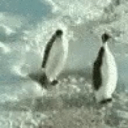

Should We Be Allies With Penguins?
should penguins be our allies?
There is hard evidence that penguins can be mean, here is said evidence. 
Although, this evidence says otherwise, I do think it would be beneficial to have penguins on our side. As we have seen with the movies "Madagascar", penguins can be quite stealthy and dangerous. Other reasons we should have penguins on our side: 1. they are soft, 2. they are squishy, 3. they are probably better at math than I am. There is a common misconception that penguins cannot fly, this could not be farther from the truth. As we can see in the masterpiece that is "Madacascar 2", the penguins can be seen attempting to fly a plane. Though the plane eventually crashed (which we will be ignoring for the purpose of this argument), this is irrefutable evidence that penguins can indeed fly. Overall, humans would greatly benefit from having penguins as an ally, and I hope one day we can live with the penguins at our side.